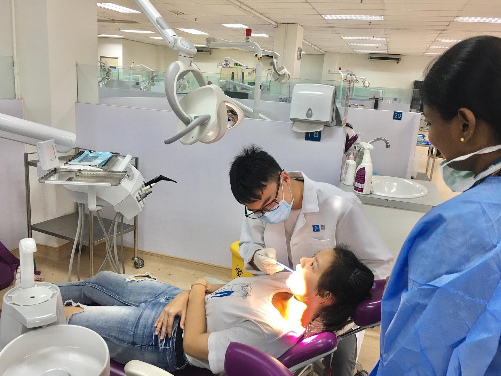
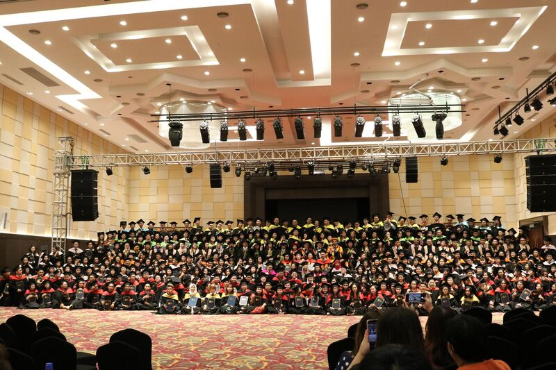
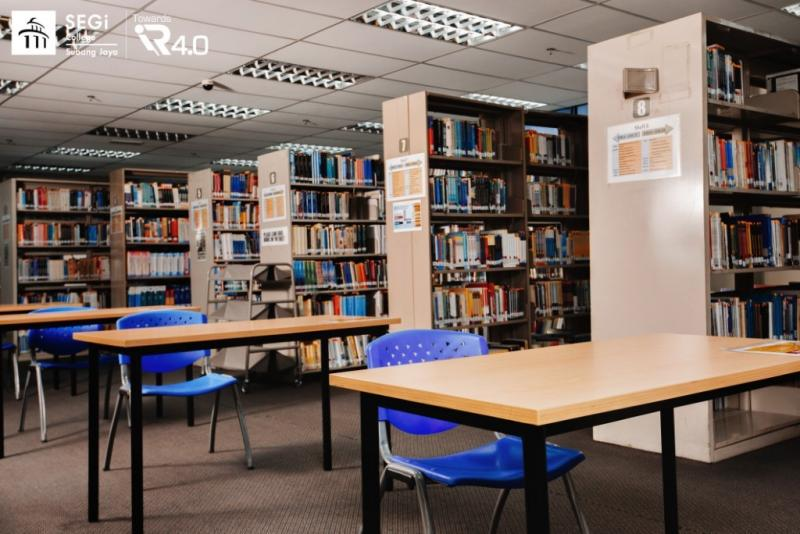

University overview
About SEGi University Malaysia
SEGi University is based in Kota Damansara, Petaling Jaya, Selangor. SEGi colleges are separately named institutions; check the teaching institution and location for your exact programme.
SEGi’s official institution directory and the University’s MQR record provide institution and qualification references. Programme availability and teaching arrangements require separate confirmation.



International students
Study at SEGi University Malaysia as an international student
Explore SEGi University in Kota Damansara, Petaling Jaya, Selangor. SEGi colleges are separately named institutions. Check the teaching institution, programme, study mode and location on your offer.
Programmes and tuition
SEGi University Malaysia SEGi courses and fees for international students
Schedule source and validity
Institution/campus in the stored schedule: SEGi provider not independently confirmed for these stored foundation/language rows; use the institution named on your offer.
Section: FOUNDATION & LANGUAGES.
Student category: International students.
Schedule edition: Current issuing edition and intake validity not confirmed.
Fee basis: Total, annual and upon-registration amounts retain the table’s MYR labels; exclusions remain in the section notes.
| No | Programme | Duration | Total Fee (MYR) | Upon Reg (MYR) | Year 1 (MYR) |
|---|---|---|---|---|---|
| 1 | FOUNDATION IN SCIENCE | 1 Year | 36,910 | 3,150 | 33,760 |
| 2 | FOUNDATION IN ARTS | 1 Year | 35,250 | 3,150 | 32,100 |
| 3 | INTENSIVE ENGLISH PROGRAMME (Full Module) | - | 27,625 | 3,150 | 24,475 |
Schedule remarks:
International Admin Fee: MYR 8,640
Visa Fee: MYR 2,150
Initial Payment: MYR 3,150
Schedule source and validity
Institution/campus in the stored schedule: SEGi University.
Section: BACHELOR PROGRAMS - UNIVERSITY (SEGi University KD).
Student category: International students.
Schedule edition: Current issuing edition and intake validity not confirmed.
Fee basis: Total, annual and upon-registration amounts retain the table’s MYR labels; exclusions remain in the section notes.
| No | Programme | Total Fee (MYR) | Year 1 (MYR) | Year 2 (MYR) | Year 3 (MYR) | Year 4 (MYR) | Year 5 (MYR) |
|---|---|---|---|---|---|---|---|
| 1 | Bachelor of Medicine & Bachelor of Surgery (MBBS) | 378,400 | 89,020 | 71,820 | 71,820 | 71,820 | 70,770 |
| 2 | Bachelor of Dental Surgery (BDS) | 382,150 | 87,960 | 72,760 | 72,760 | 72,760 | 72,760 |
| 3 | Bachelor of Optometry (Hons) | 128,250 | 44,180 | 26,980 | 26,980 | 26,960 | - |
| 4 | Bachelor of Pharmacy (Hons) | 158,250 | 51,680 | 34,480 | 34,480 | 34,460 | - |
| 5 | Bachelor of Biomedical Science (Hons) | 119,550 | 50,000 | 33,300 | 33,100 | - | - |
| 6 | Bachelor of Business Management (Hons) | 85,925 | 38,660 | 22,060 | 22,055 | - | - |
| 7 | Bachelor of Accounting and Finance (Hons) | 81,450 | 37,160 | 20,560 | 20,580 | - | - |
| 8 | Bachelor of Arts (Hons) Visual Communications Design | 86,550 | 38,880 | 22,280 | 22,240 | - | - |
| 9 | Bachelor of Arts (Hons) Multimedia Design | 91,950 | 40,680 | 24,080 | 24,040 | - | - |
| 10 | Bachelor of Mass Communications (Hons) | 88,705 | 39,600 | 23,000 | 22,955 | - | - |
| 11 | Bachelor of Education (Hons) | 89,625 | 39,900 | 23,300 | 23,275 | - | - |
| 12 | Bachelor of Psychology (Hons) | 95,050 | 41,700 | 25,100 | 25,100 | - | - |
| 13 | Bachelor of Computer Science (Hons) | 92,950 | 41,000 | 24,400 | 24,400 | - | - |
| 14 | Bachelor of Information Technology (Hons) | 85,925 | 38,660 | 22,060 | 22,055 | - | - |
| 15 | Bachelor of Science (Hons) Architecture | 104,550 | 45,000 | 28,400 | 28,000 | - | - |
| 16 | Bachelor of Arts (Hons) Interior Architecture | 95,550 | 38,120 | 21,520 | 21,520 | 11,240 | - |
| 17 | Bachelor of Quantity Surveying (Hons) | 84,175 | 34,880 | 18,280 | 18,280 | 9,585 | - |
| 18 | Bachelor of Engineering (Hons) - Mechanical/Civil/Chemical/Electrical | 113,625 | 40,080 | 23,480 | 23,480 | 23,435 | - |
Schedule remarks:
Initial Payment (Upon Registration): MYR 3,150.00
International Admin Fee: MYR 8,640
Technology Fee: Included in Facility fees
Download BACHELOR PROGRAMS - UNIVERSITY (SEGi University KD) (PDF)
Schedule source and validity
Institution/campus in the stored schedule: SEGi University.
Section: MASTER'S PROGRAMS (SEGi University KD).
Student category: International students.
Schedule edition: Current issuing edition and intake validity not confirmed.
Fee basis: Total, annual and upon-registration amounts retain the table’s MYR labels; exclusions remain in the section notes.
| No | Programme | Total Fee (MYR) | Year 1 (MYR) | Year 2 (MYR) |
|---|---|---|---|---|
| 1 | MBA (General Mgt/Finance/Marketing/HR Mgt/Global Business) | 54,350 | 51,200 | - |
| 2 | Master of Accountancy / Financial Planning | 56,900 | 53,750 | - |
| 3 | MA in Corporate Communication | 49,650 | 34,740 | 11,760 |
| 4 | Master of Education (Research) | 51,150 | 35,740 | 12,260 |
| 5 | Master of Education (Coursework) | 47,250 | 44,100 | - |
| 6 | MSc in Management | 55,100 | 33,080 | 18,870 |
| 7 | MSc in IT / Vision Science | 52,060 | 31,560 | 17,340 |
| 8 | MSc in Engineering | 59,950 | 35,500 | 21,300 |
| 9 | MSc Pharmaceutical Sciences | 51,950 | 31,500 | 17,300 |
| 10 | Master of Laws | 54,250 | 51,100 | - |
Schedule remarks:
Initial Payment: MYR 3,150.00
Note: Masters fees exclude EMGS/Visa renewal fees
Schedule source and validity
Institution/campus in the stored schedule: SEGi University.
Section: DOCTORAL PROGRAMS (SEGi University KD).
Student category: International students.
Schedule edition: Current issuing edition and intake validity not confirmed.
Fee basis: Total, annual and upon-registration amounts retain the table’s MYR labels; exclusions remain in the section notes.
| No | Programme | Total Fee (MYR) | Year 1 (MYR) | Year 2 (MYR) | Year 3 (MYR) |
|---|---|---|---|---|---|
| 1 | Doctor of Business Administration (DBA) | 81,850 | 35,700 | 21,500 | 21,500 |
| 2 | PhD (Management) | 70,650 | 31,960 | 17,760 | 17,780 |
| 3 | PhD (Information Technology) | 60,550 | 28,600 | 14,400 | 14,400 |
| 4 | PhD (Education / Engineering) | 78,450 | 34,560 | 20,360 | 20,380 |
Schedule remarks:
Initial Payment: MYR 3,150.00
Technology Fee: Included in Facility fees
Download fee schedule (PDF)
Stored fee document for SEGi University. Check the printed validity and terms.
SEGi University rankings: QS World, Asia & Malaysia
Verified . Each figure below names its ranking edition.
- QS World 2027
- #701–710
- QS Asia 2026
- #350
- Malaysia · QS World 2027
- #18–20
Malaysia positions are calculated among the 32 institutions listed by QS under Malaysia in its World 2027 table. This is not a separate government ranking. An = sign marks a tie. Institutions in the same world-rank band share a national position range because their exact order is not published.
QS World and QS Asia use different methods. Overall university positions do not establish the ranking of a particular BBA, IT, MBA or other program.
Explore the campus
Campus gallery
Questions and answers
Frequently Asked Questions About SEGi University Malaysia SEGi
What is the difference between SEGi University and SEGi colleges?
They are distinct institutions within SEGi's education network. Check the teaching institution, campus and awarding body on the programme page and offer; their course availability and admissions information should not be mixed.
Which campus should I use when researching SEGi University?
Start with the university's Kota Damansara information and confirm the programme's actual teaching arrangements. A SEGi college location or partner award may require a separate comparison.
View ranking sources
SEGi University - QS profile · QS World University Rankings 2027 - official results spreadsheet (v1.1) · SEGi University - QS Asia 2026 result · QS World University Rankings 2027 - release corrections
What is the QS World ranking of SEGi University in 2027?
SEGi University is ranked #701–710 in QS World University Rankings 2027.
Sources: SEGi University - QS profile · QS World University Rankings 2027 - official results spreadsheet (v1.1)
What is the QS Asia ranking of SEGi University in 2026?
SEGi University is ranked #350 in QS Asia University Rankings 2026.
What is the ranking of SEGi University in Malaysia?
SEGi University has Malaysia position #18–20 among the 32 institutions listed under Malaysia in QS World 2027, calculated from the published table. The world-rank band does not establish a more precise national order. This is a position within the QS World table, not a separate government ranking or a QS Asia position.
Sources: QS World University Rankings 2027 - official results spreadsheet (v1.1) · QS World University Rankings 2027 - release corrections
Do QS Stars, SETARA or partner rankings give SEGi University an overall QS rank?
QS Stars and SETARA are ratings, not numerical positions in a QS league table. A subject ranking applies to that subject, and a partner university rank belongs to the named partner. Check the institution, ranking system and edition before comparing.
Sources: QS Stars rating system
Are these SEGi University or SEGi College Kuala Lumpur fees?
The degree and postgraduate sections are labelled SEGi University KD. SEGi College Kuala Lumpur is a different institution; use its own schedule for a college offer.
Does SEGi's listed total include visa renewals?
Read the notes for your qualification. Some postgraduate notes expressly exclude EMGS or visa-renewal charges, so a total-fee column should not be treated as a complete multi-year budget.
What are SEGi University's tuition fees for Bangladeshi students?
Bangladeshi applicants should check the international-student rate for their program and intake. This page does not establish a separate Bangladesh-only tuition rate or guarantee eligibility for a discount. Check nationality-specific charges, deposits, visa costs and scholarship conditions in the schedule and your written offer.
Where can I find the official SEGi University fee chart?
The download links on this page open the stored fee documents. One-Step is a student guidance website. Confirm the document's edition, campus, student category and validity with the university before accepting an offer or paying. The university's current written fee schedule and offer determine the amount payable.
Which year do the SEGi University fees apply to?
Use any effective dates and intake restrictions stated in the fee documents and course remarks. A single validity year has not been confirmed for every table on this page. A recent page update does not mean all underlying fees are for the current year.
Does SEGi University offer scholarships for international students?
Check any scholarship, adjusted tuition or discount columns alongside their conditions. A listed reduction is not an automatic award for every international or Bangladeshi applicant. Ask for the scholarship name, eligibility, application deadline, renewal conditions and final payable fee in writing.